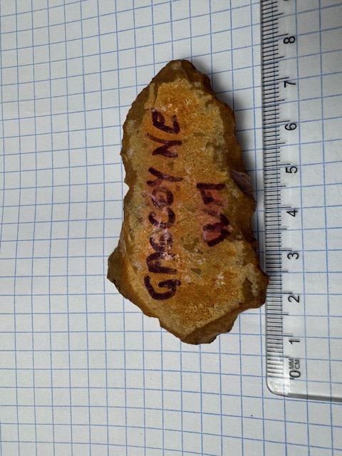

The Pilbara & Gascoyne
Bellary Creek & Western Australia Coast
Traditional Custodians: The Yinhawangka People
About the People
The Yinhawangka people are the traditional owners of the inland Pilbara region, sharing deep cultural and spiritual connections to the ancestral waterways, ranges, and gorges of the Ashburton River basin. They possess a rich linguistic heritage and maintain an unbroken system of customary law and ecological stewardship over the harsh, beautiful landscape of Western Australia.
The arid coastal and inland regions of the Gascoyne and the Pilbara boast some of the most ancient archaeological profiles of human continuous occupation anywhere on earth, dating back over 40,000 years. The traditional lands of language groups like the Yinggarda, Baiyungu, and Malgana conceal widespread evidence of continuous nomadic life.
Artefactual evidence often mirrors findings at locations like Bellary Creek (Paraburdoo), where remnants of extensive stone tool manufacturing (knapping) are frequently recovered. The utilization of extremely hard local stones such as chert allowed Indigenous populations to craft robust flake knives, microliths, and spear components crucial for survival in the deep outback. Coastal excavations in the broader region (such as Mandu Mandu Creek) have uncovered items like 32,000-year-old shell bead necklaces.

Archived Artefacts
Multiple artefacts originating from the Western Australia coast and Bellary Creek region have been historically catalogued, including heavy axe heads and knapping fragments.
View Artefacts in Gallery →A Note on Artefact Protection
Under strict local and federal laws, all Aboriginal archaeological places and objects are now definitively protected. Visitors encountering unknown potential artefacts in the wild must invariably leave them undisturbed and report them to relevant Traditional Owner groups or State Heritage Branches.
Research Sources & Citations: